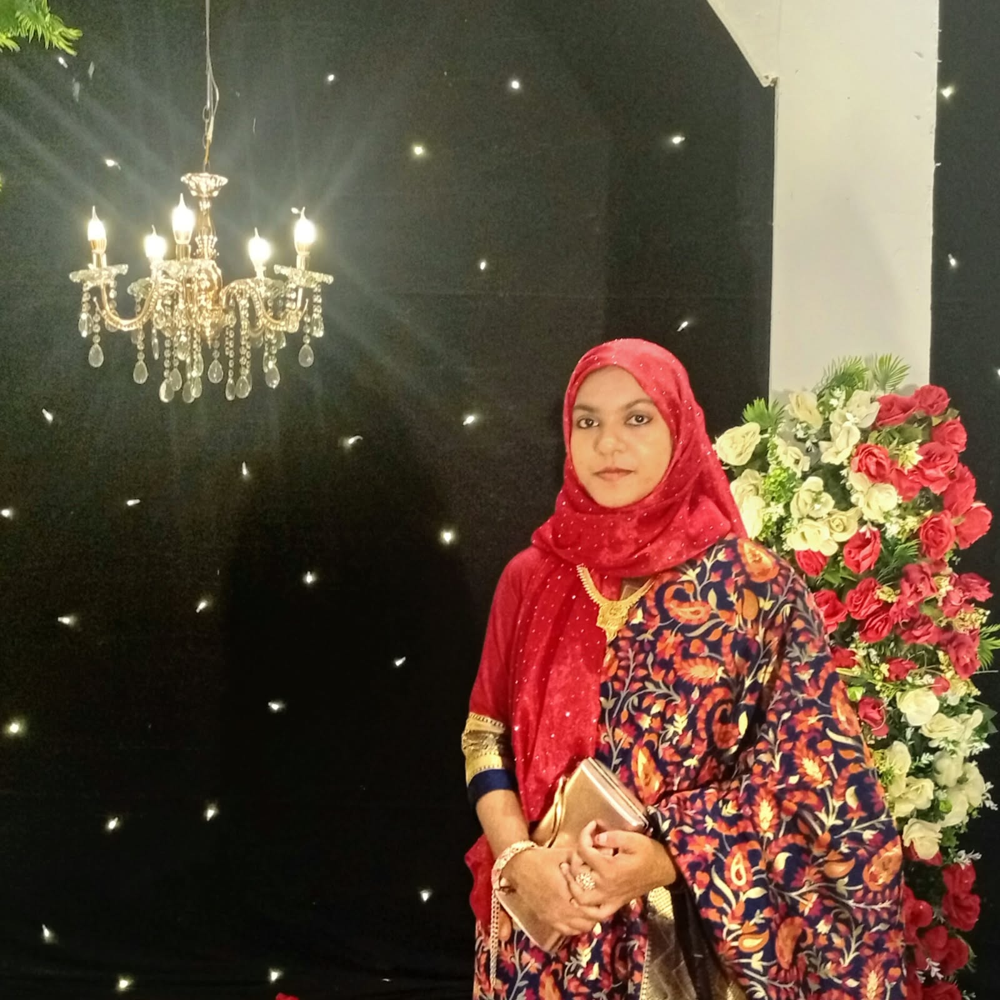
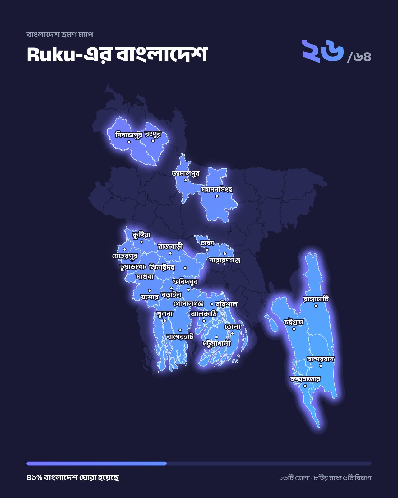
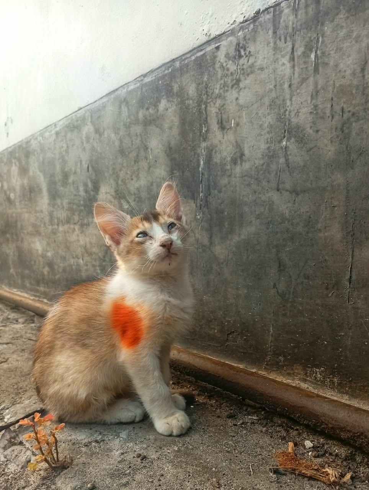
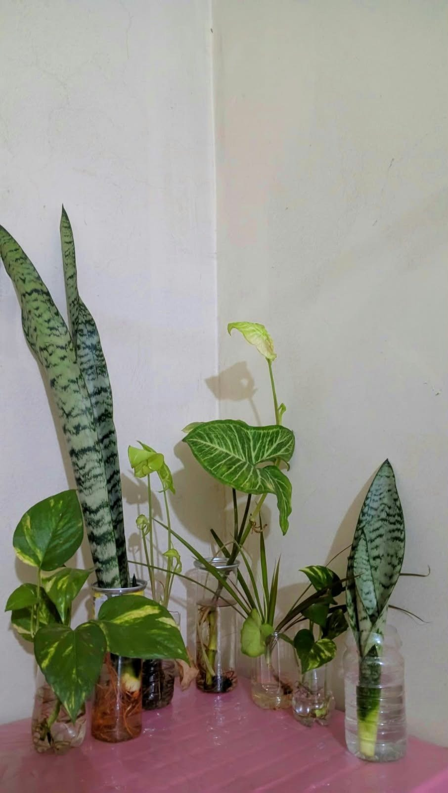

CURRENT STUDY
B.Sc. in Electrical and Electronic Engineering
Jamalpur Science & Technology University
2nd Year · 1st SemesterEEE STUDENT · BANGLADESH
An Electrical and Electronic Engineering student interested in Power Systems, MATLAB, and Embedded Systems. I enjoy solving engineering problems and turning ideas into practical projects.

01 / ABOUT ME
I’m an EEE student at Jamalpur Science and Technology University with a growing interest in electrical systems, simulation, and practical engineering.
I enjoy learning new tools, exploring how things work, and developing skills that help turn concepts into real-world solutions. I’m currently building my foundation through coursework and hands-on projects.
View my education →02 / EDUCATION
CURRENT STUDY
Jamalpur Science & Technology University
2nd Year · 1st SemesterHIGHER SECONDARY
Govt. Syed Hatem Ali College, Barishal
GPA 5.00 / 5.00SECONDARY
Saroda Sundari Girls' High School, Faridpur
GPA 5.00 / 5.0003 / SKILLS
Skills I’m developing through study, practice, and projects.
Programming fundamentals and problem-solving.
Numerical computing and engineering analysis.
Electronic circuit simulation and analysis.
Creating and editing visual content.
Skill indicators are illustrative and can be adjusted in index.html.
04 / PROJECTS

ELECTRICAL ENGINEERING · PROJECT 01
A foundational electrical engineering project exploring how a transformer reduces AC voltage through electromagnetic induction.
Academic project
WEB DEVELOPMENT · PROJECT 02
This personal portfolio website, designed and built with the help of AI tools using HTML, CSS, and JavaScript, then published online.
Personal project05 / BEYOND ENGINEERING

Finding fresh perspectives in new surroundings.

Capturing moments, details, and everyday beauty.

Adding a little green and calm to my space.
06 / CONTACT
Have a project idea, an engineering discussion, or just want to connect? Feel free to send me an email.